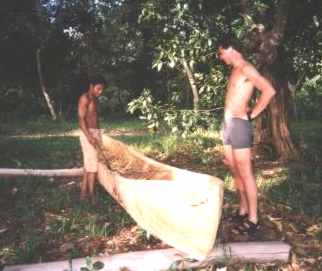

Een Longhouse-bewoner weeft een matje. |
Eens in de zoveel tijd komt koopt een handelaar zijn houtsnijwerk om het voor het 10-voudige in de stad te verkopen. |
Een bewoner uit Mawan maakt een fuik. |
Deze vaklieden uit Mawan maken een houten boot voor een dorpsgenoot. Naast een kettingzaag wordt er gebruik gemaakt van een hakbijl. |
Mawan is een ambachtelijk dorpje. Hier maakt een inwoner manden. |
|  |
Een inwoner van Sukadana maakt een boot door een boomstam uit te hollen! Hij gebruikt hierbij slechts een parang... |